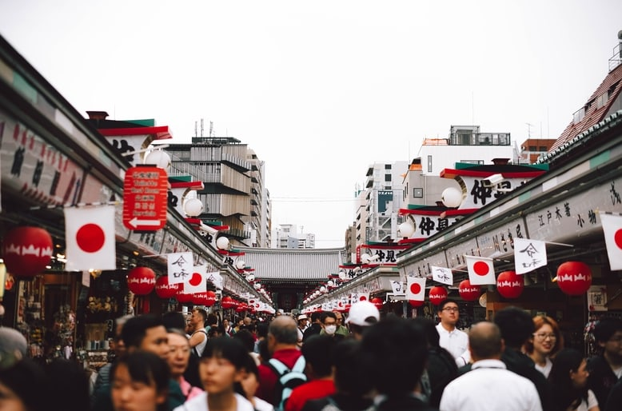

Asakusa (浅草) est un quartier de Tokyo très prisé des touristes.
Son symbole le plus connu est très certainement le kaminarimon (雷門) qui est une énorme lanterne rouge entre 2 grandes statues gardiennes Fuujin (風神), divinité du vent et Raijin (雷神), divinité du tonnerre. Ils se trouvent à l'entrée du temple bouddhiste Senso-ji (浅草寺) dédié à la déesse de la miséricorde Kannon (観音).
En traversant cette entrée, on se retrouve à la "nakamisedori" (仲見世通り) qui est une grande rue commerçante avec de multiples échoppes à souvenirs qui feront le bonheur de nombreux touristes.
Entre tradition et modernité
Le quartier est riche d'une atmosphère de l'ancien Tokyo de l'époque. On peut y trouver de nombreuses boutiques et de restaurants dans ce thème traditionnelle. De nombreux conducteurs de pousse-pousse auront aussi le plaisir de vous guider dans le quartier à bord de leur véhicule.
Après avoir traversé la nakamisedori, on se retrouve aux abords du temple Senso-ji.
De nombreux japonais y viennent pour prier et pour aussi tirer des prédictions appelées omikuji (おみくじ). Le principe est simple, vous avez un cylindre contenant des bâtons numérotés avec lequel vous secouez. Un bâton numéroté devra sortir via un orifice du cylindre suite au secousses produites. Il n'y a plus qu'à lire le numéro du bâton, le remettre dans le cylindre et se référer à une zone du temple rempli de tiroirs numérotés dans lequel vous trouverez votre prédiction.
A l'intérieur du temple, nous pouvons trouver une statue représentant la déesse de la miséricorde Kannon. Très appréciée par de nombreux pélérins qui viennent prier devant elle.
Aux alentours de la nakamisedori nous trouvons aussi d'autres batiments plus modernes et un peu plus loin un centre commercial. Nous pouvons aussi trouver un théâtre ainsi qu'un parc d'attraction pour les jeunes enfants.
 La "nakamisedori" (仲見世通り)En été, l'un des plus grands festivals shintoïstes a lieu aux abords du temple Senso-ji. Une grande procession s'organise et beaucoup de personnes habillées pour cette occasion deviennent des porteurs pour transporter une sorte de temple portatif appelée "mikoshi" 神輿. L'ambiance est très festive et de nombreux stands de restauration et de jeux se montent durant le festival.